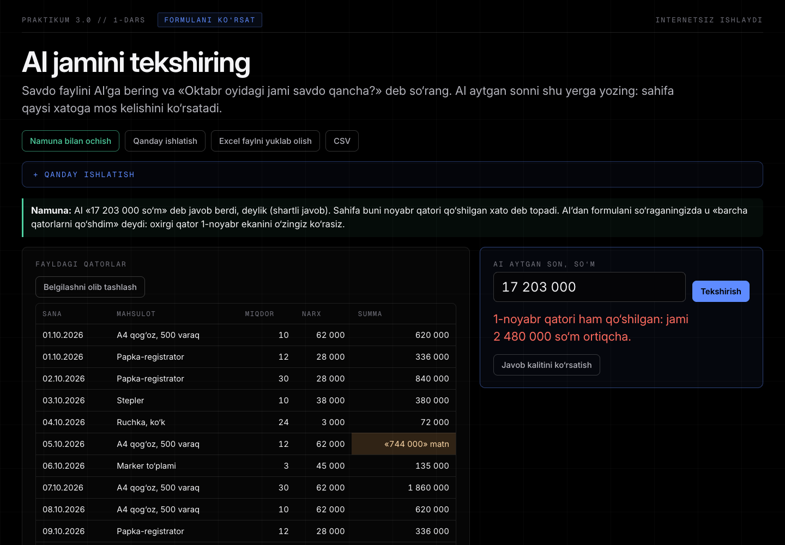

«Formulani ko‘rsat»: qanday ishlatish
Sahifa: index.html, internetsiz ochiladi.
Fayllar: savdo-oktabr.xlsx va savdo-oktabr.csv (shartli do‘kon savdosi, 35 qator).
Nima uchun
AI hisobda xato qilsa ham ishonch bilan javob beradi, Excel kabi qizil katak ko‘rsatmaydi. Bu mashq AI’ning sonini tekshirishni va «formulangni ko‘rsat» deb so‘rashni o‘rgatadi.
Boshlashdan oldin kerak
- savdo-oktabr.xlsx fayli (sahifadagi tugma yoki mentor beradi).
- Claude yoki boshqa AI chat.
Qadamlar
- Faylni AI chatga yuklang.
- So‘rang: «Oktabr oyidagi jami savdo qancha?»
- AI aytgan sonni sahifadagi «AI aytgan son» qutisiga yozing va «Tekshirish»ni bosing.
- AI’dan so‘rang: «Qanday hisobladingiz? Formulani va qaysi qatorlarni qo‘shganingizni ko‘rsat.»
- «Tuzoqlarni belgilash» tugmasi bilan jadvaldagi muammoli qatorlarni ko‘ring.
Faylda nima bor
- 34 ta oktabr savdosi va 1-noyabrdagi bitta savdo (oxirgi qator).
- 3 ta summa Telegram’dan nusxalangandek matn bo‘lib yozilgan («744 000»): Excel SUM ularni qo‘shmaydi.
Natijani qanday o‘qish
| Rang | Ma’nosi |
|---|---|
| Yashil | Son to‘g‘ri: 34 ta oktabr qatori, matnli summalar ham hisobda |
| Qizil | Ma’lum xato: matnli summalar tushib qolgan yoki noyabr qo‘shilgan; sababi yoziladi |
| Kulrang | Boshqa xato: farq yoziladi, AI’dan formulani so‘rang |
Namuna
«Namuna bilan ochish» tugmasi AI «17 203 000 so‘m» deb javob bergan holatni ko‘rsatadi (shartli javob).

Sahifa: «1-noyabr qatori ham qo‘shilgan: jami 2 480 000 so‘m ortiqcha». To‘g‘ri oktabr jami 14 723 000 so‘m. Excel’da butun ustunga =SUM qilsangiz, 16 270 000 chiqadi: u ham xato, chunki 3 ta matnli summani tashlab, noyabrni qo‘shadi.
Qanday o‘qish: AI ham, Excel ham noto‘g‘ri bo‘lishi mumkin. Farqi: so‘rasangiz, AI qanday hisoblaganini aytadi; siz qaysi qatorlarni olganini tekshirasiz.
Ko‘p uchraydigan xatolar
- Birinchi javobni tekshirmasdan hisobotga qo‘yish.
- «To‘g‘rimi?» deb so‘rash: AI odatda «ha» deydi. «Qaysi qatorlarni qo‘shding?» deb so‘rang.
- Sanaga qaramaslik: oy oxiridagi va boshidagi qatorlar aralashib ketadi.
Tayyor
AI’ning soni qaysi qatorlardan chiqqanini va qayerda adashganini tushuntira olasiz.